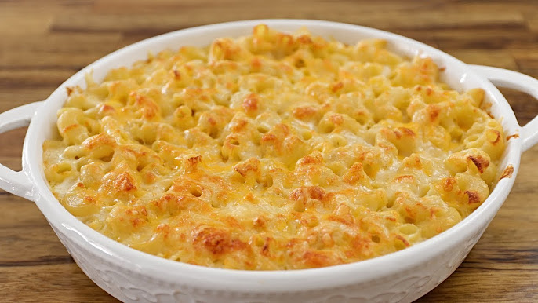

Home
Baked Macaroni and Cheese

Description
An oven-baked macaroni and cheese pie. Perfect for sharing as a side dish.
Ingredients
- Macaroni pasta
- Sharp cheddar cheese
- Salt
- Paprika
- Onion powder
Steps
- Shred the cheddar cheese
- Boil the macaroni, adding salt to the pasta water
- After the macaroni has been boiled to desired consistency, drain the pasta water
- Add the paprika and onion powder to the macaroni, to taste
- Add the macaroni to a baking pan, with cheese spread throughout
- Add a layer of cheese to the top of the macaroni making sure the pasta is fully covered
- Bake in the oven at 400° for 30 min or until the top becomes golden with a few brown spots
- Remove the pan from the oven and enjoy!